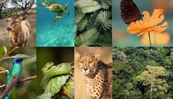

يعني التنوع الاحيائي او التنوع البيولوجي بجمي اصناف الحياه علي الارض بجميع اشكالها من الجينات و البكتريا الي النظام البيئةبائكملهامثل الغابات او الشعاب المرجانية
أهميه التنوع البيولوجيوفي الواقع، هناك ثلاثة أنواع رئيسية من التنوع البيولوجي: التنوع الوراثي، وتنوع الأنواع، وتنوع النظم الإيكولوجية. فلنكتشف الدور الذي يلعبه كل من هذه الأنواع في جعل الزراعة منتجة، ومغذية، وقادرة على الصمود، ولنتعرف على بعض السكان الريفيين الذين يقومون بدورهم في حماية هذا التنوع.
إن التنوع البيولوجي عامل أساسي لتحقيق األمن الغذائي وتحسين التغذية. وتعتمد جميع النظم الغذائية على التنوع البيولوجي ومجموعة واسعة من خدمات النظم اإليكولوجية التي تدعم اإلنتاجية الزراعية، وخصوبة التربة، ونوعية المياه وإمداداتها. وعاوة على ذلك، يعتمد ثلث المحاصيل الزراعية في العالم على األقل على الملقحات.
